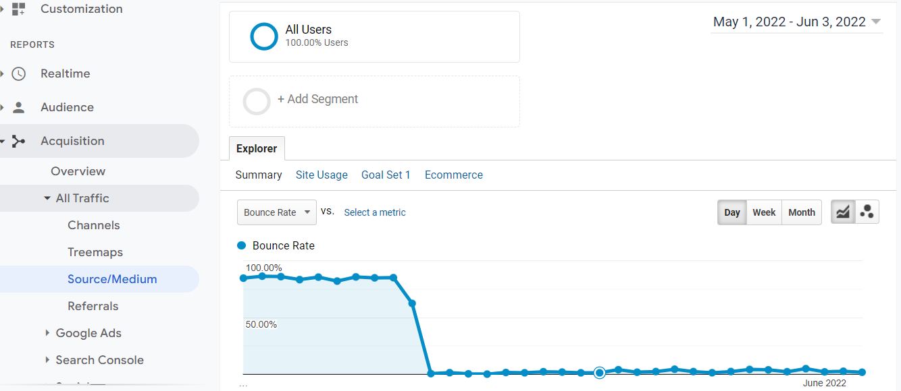
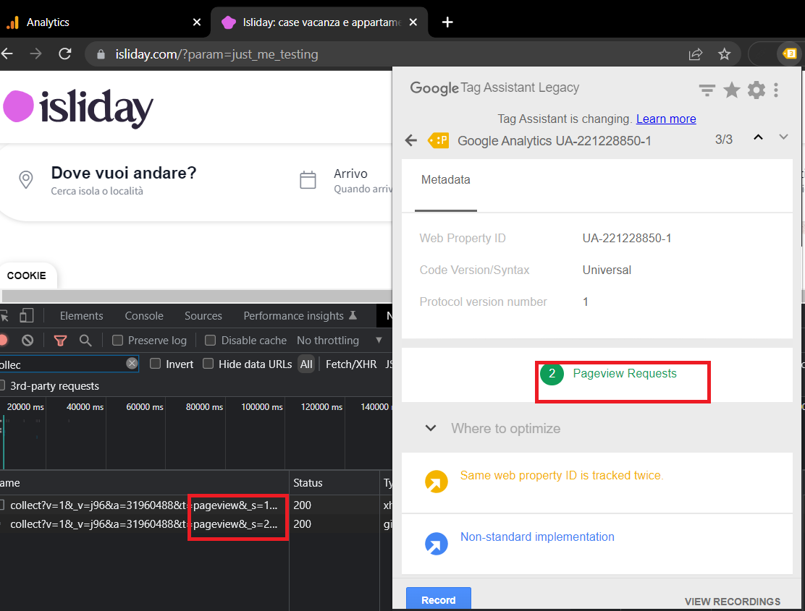
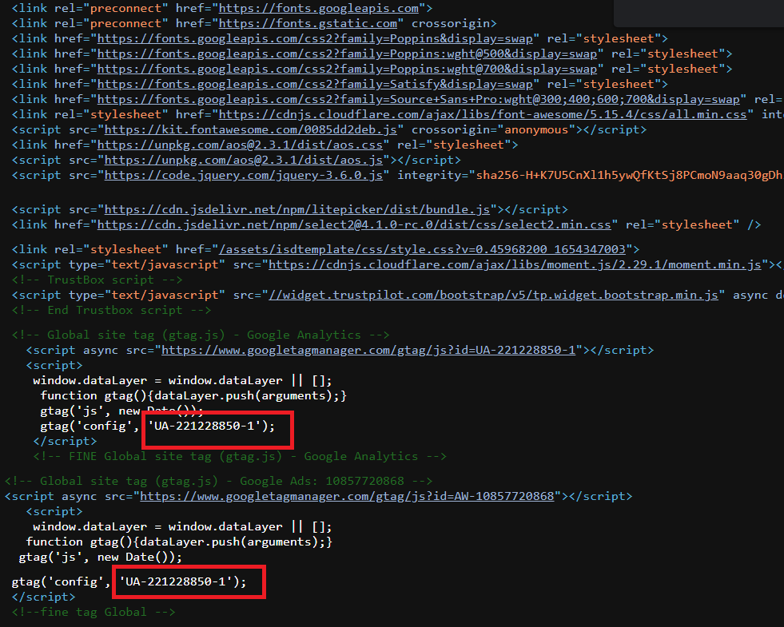

Isliday
Report 04-06-2022
Problematica riscontrata: Bounce rate eccessivamente basso dal inizio Maggio 2022.
Accedendo al report Acquisizione > Tutto il traffico > Sorgente mezzo si vede che il bounce rate, dal 1 Maggio al 3 Giugno, è al 27.33% e il numero di utenti che hanno effettuato una visita è di 35.570. La percentuale, relativamente bassa, dà prova dell'esistenza di un problema quando si isola la metrica nel grafico, come da immagine.
La prima ipotesi, e la più comune, è che Google Analytics stia tracciando due volte la visuazlizzazione di pagine. L'ipotesi è corroborata sia dal Tag Assistant che dall'analisi delle richieste di rete. In questo screenshot si noti come vengano, infatti, indicate due visualizzazioni di pagina.
La risoluzione del problema quindi nella rimozione di uno dei due codici di Google Analytics presenti nel codice HTML del sito.
Si noti che il codice di Google Analytics è stato implementato due volte, probabilmente durante l'installazione del tag di Google Ads.
Consiglio di rimuovere entrambi gli script in favore di quello presentato qui sotto:
<script>async src="https://www.googletagmanager.com/gtag/js?id=UA-221228850-1"></script>
<script>async src="https://www.googletagmanager.com/gtag/js?id=AW-10857720868"></script>
<script>
window.dataLayer = window.dataLayer || [];
function gtag(){dataLayer.push(arguments);}
gtag('js', new Date());
gtag('config', 'UA-221228850-1');
gtag('config', 'AW-10857720868');
</script>
In questo modo saranno presenti sia Google Ads sia Google Analytics utilizzando di fatto un solo script